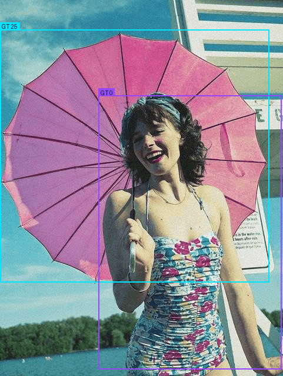

E3://TRAINED ROUTING EVIDENCE
From constant routing to measurable spatial specialization
True router probabilities captured from Tencent YOLO-Master after compatible weight transfer and 10 COCO8 epochs. Colors are per-token argmax expert IDs; every panel keeps counts, probability, entropy and margin beside the image.
192trained captures
160aligned comparisons
4 + 4MOT/MOA spatial layers
0core forward edits
